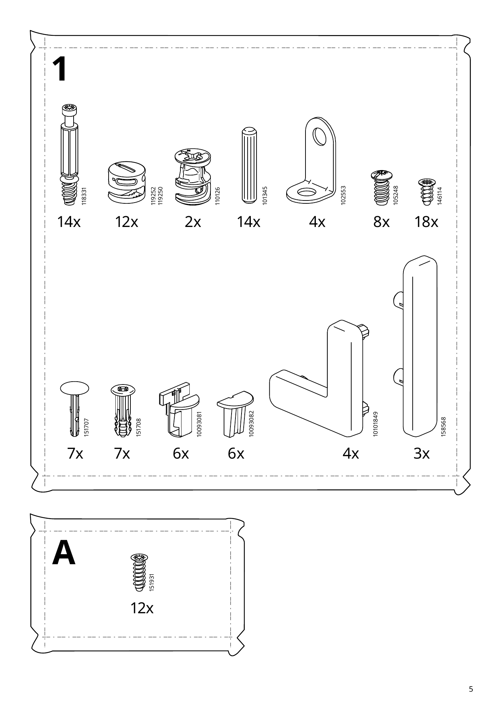
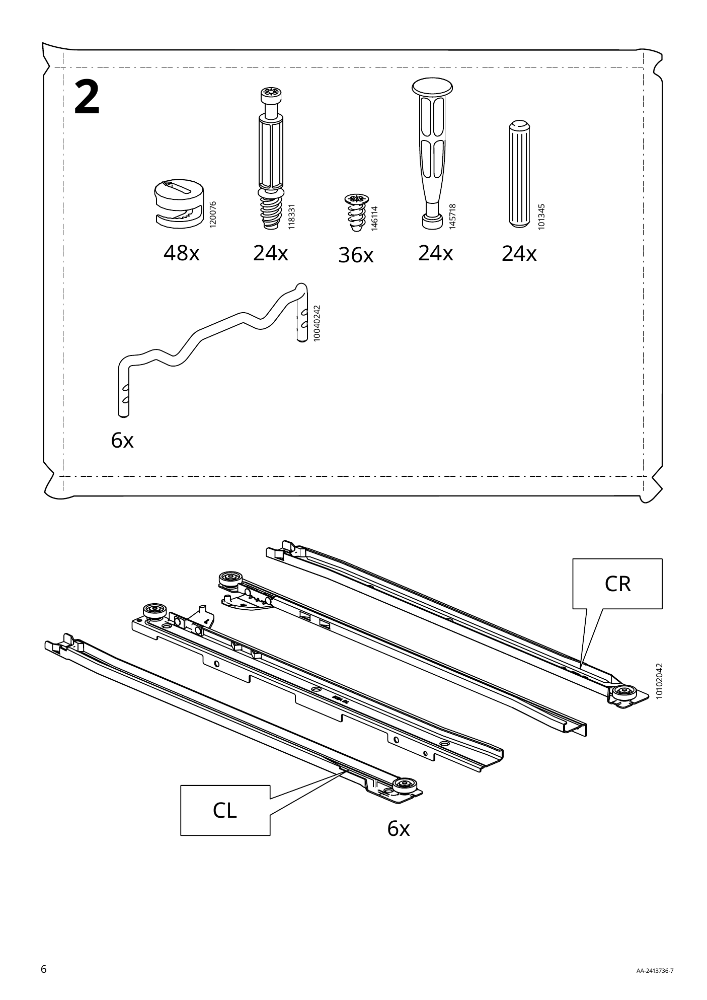
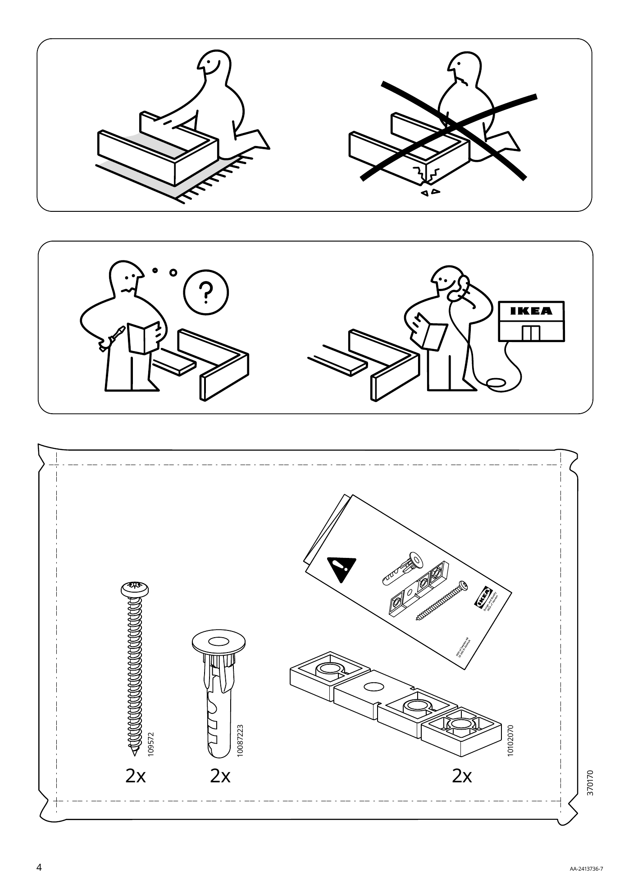
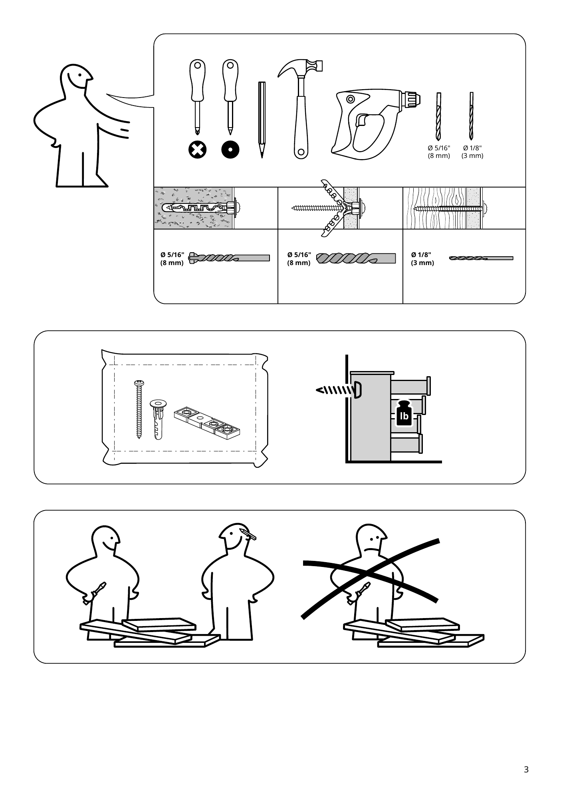

AA-2413736-7 · 32 页 · 45 步 · 6 个抽屉
STORKLINTA 组装助手
示意动画，比例为估算，孔位和方向以下方说明书原图为准。拖动画面可旋转，点一下可放大局部。连续播放时，抽屉只演示一次。
柜体靠墙的位置有踢脚线吗？
回答由 Claude 根据本步原图和说明生成，可能出错。关键位置请再看原图。
虚拟格子
请把零件按上面的位置摆在软垫或托盘上，不需要实体格子。大板件说明书没有编号，暂不在格子内。
局部放大
开工前清点
数量来自说明书第 4–6 页。螺丝和连接件已和各步用量逐项核对。勾选后保存在这台设备上。
| 到齐 | 编号 | 数量 | 袋 | 用在 |
|---|




开工前先看
说明书警告：曾有儿童因家具倾倒死亡。必须安装随附的防倾倒装置。
- 不要在这件家具上放电视。
- 不要让儿童站立、攀爬或悬挂在抽屉、门或搁板上。
- 不要同时打开超过一个抽屉。
- 不要拆除或破坏抽屉联锁系统，它关系到稳定和安全。
- 最重的物品放在最下层抽屉。
- 逐步按说明书操作。说明书建议两人组装。
- 随附螺丝和墙塞适用于大多数实心墙和空心墙。实木只用螺丝，不用墙塞。不确定时请咨询专业人士。
需要留意第 22 页图示：未固定时最多开一个抽屉，固定到墙上后可开多个。第 2 页文字则要求不要同时打开超过一个抽屉。本工具按第 2 页执行。
本工具不是宜家官方产品，也不能替代随货说明书。